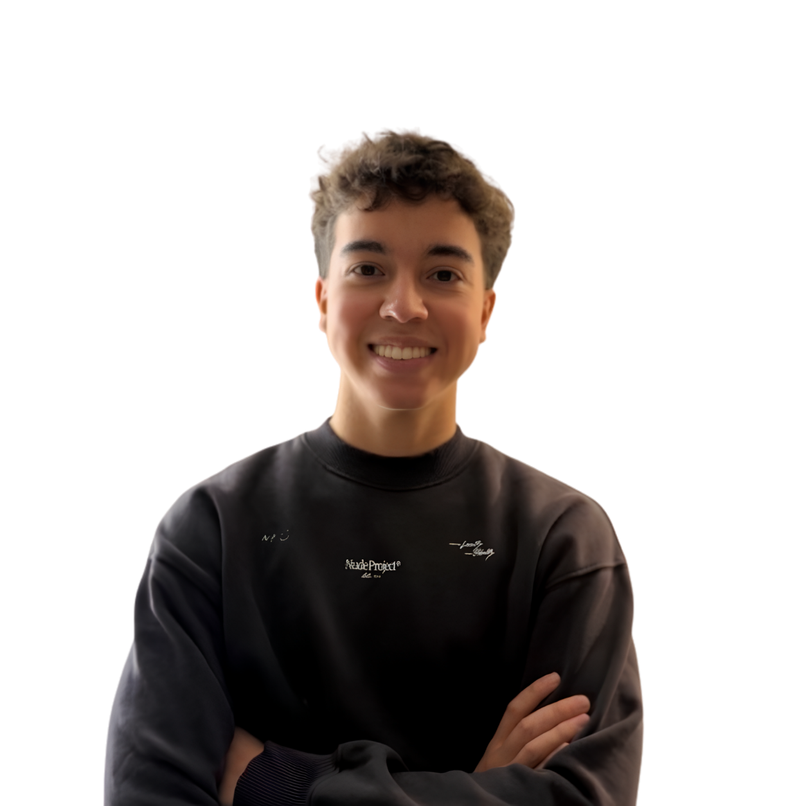
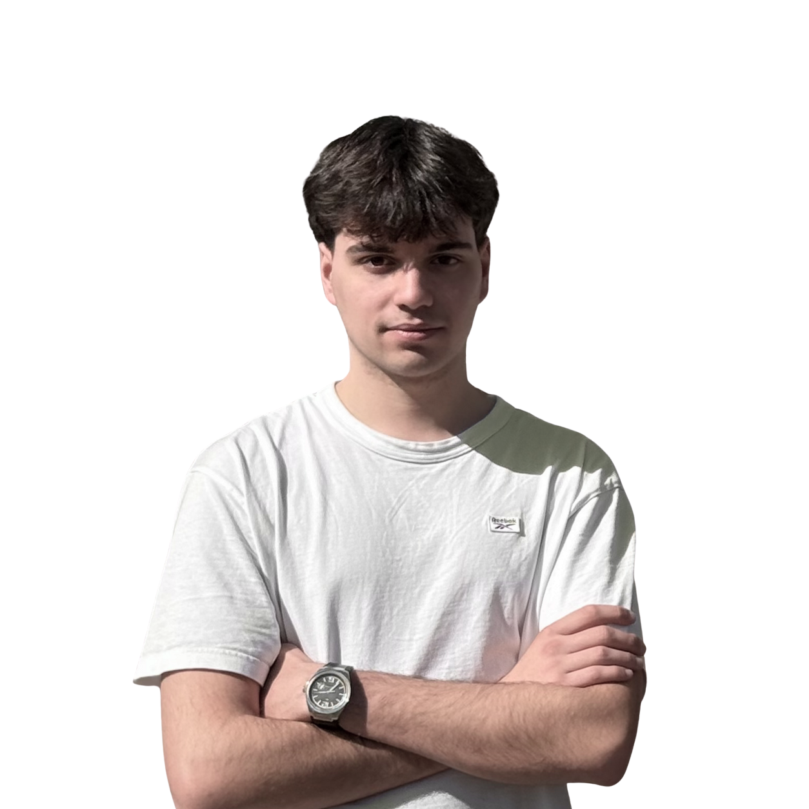
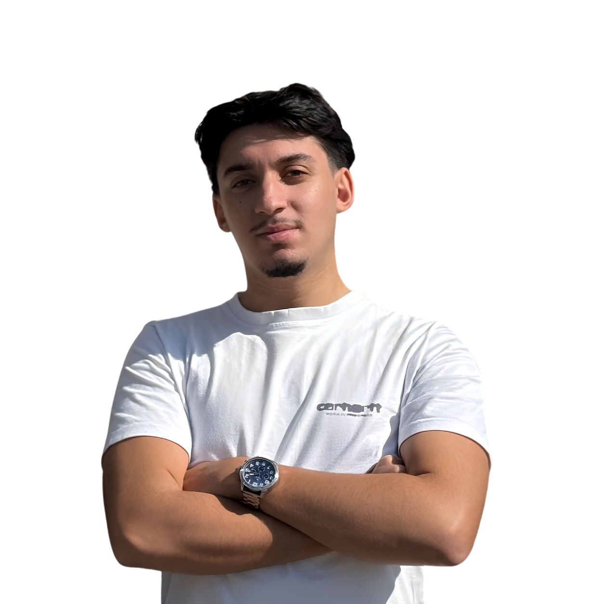
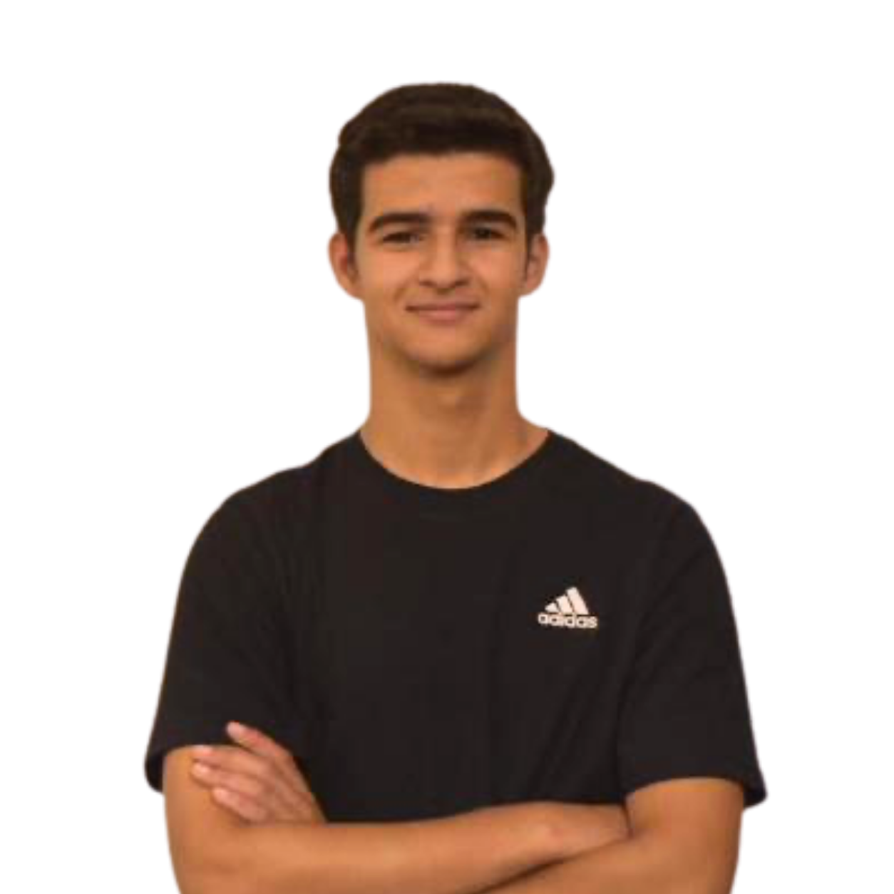

meet the team
May 2026We don't talk about ourselves much. But this felt worth writing. Not as a bio. As a statement of intent.
Behind every company there are people with reasons. This is ours. Four different profiles, different personalities, different opinions, leading to a vision that is both singular and wide. Because it's in that difference that we get closest to something complete.

Humberto Bastos
Founder
Kind Tech exists because the world needs AI that actually serves people. Not just the ones who are easiest to serve. My obsession is building a company where that mission is backed by exceptional talent. People with high agency. People who challenge themselves before anyone challenges them. Because that is the only environment where we all grow, as professionals and as people.
The vision for Kind Tech goes far beyond any single product. We are building the infrastructure of AI care, tools that help people live better and longer. Longevity is one of the great challenges of our time and technology has barely touched it. We are here to change that. Everything we build points there.

Miguel Correia
Head of Growth
Most companies go after the easiest market. I am more interested in the necessary ones. The gap between AI and the people who need it most is not inevitable. It is just unaddressed. That is the opportunity I came here to build around.
My work is to think clearly about where Kind Tech should be in three years and reverse-engineer the path there. Distribution, partnerships, positioning. Not chasing noise, not reacting to trends. Building something that compounds. We are doing this from Portugal with international ambition, and that constraint makes us sharper, not smaller.
In a market where everyone claims to have the answer, the edge belongs to whoever truly understands the problem. That is what I spend my time on.

Afonso Roque
Head of Relations
I am here because this is the kind of work that leaves a mark. Not on a spreadsheet, on someone's day.
Most of what I do is not visible. It is in the rooms before the meeting, in the questions nobody thought to ask, in the relationship built before there was anything to sell. That is where trust starts. And in the markets we are entering, trust is the product.
My role is to build the bridges, to the organisations, the partners, the markets that can bring Kind Tech to the people and places that need it most. Understanding not just who our clients are, but why they need us, and what changes when they find us. That is not a sales pitch. It is the reason I am here.

André Martins
Engineer
The vision means nothing until someone builds it. That is where I come in.
At KindTech, I am responsible for the foundation - the architecture, the systems, the decisions that everything else depends on. Before I build anything, I make sure it is worth building. Then I move, fix what breaks, and hold myself to a standard that does not shift.
I came here early. I did not wait to feel ready, and I did not shy away from the difficulty. I could have taken an easier path. I chose not to. The work here reaches real people, and that changes everything about how I approach it.